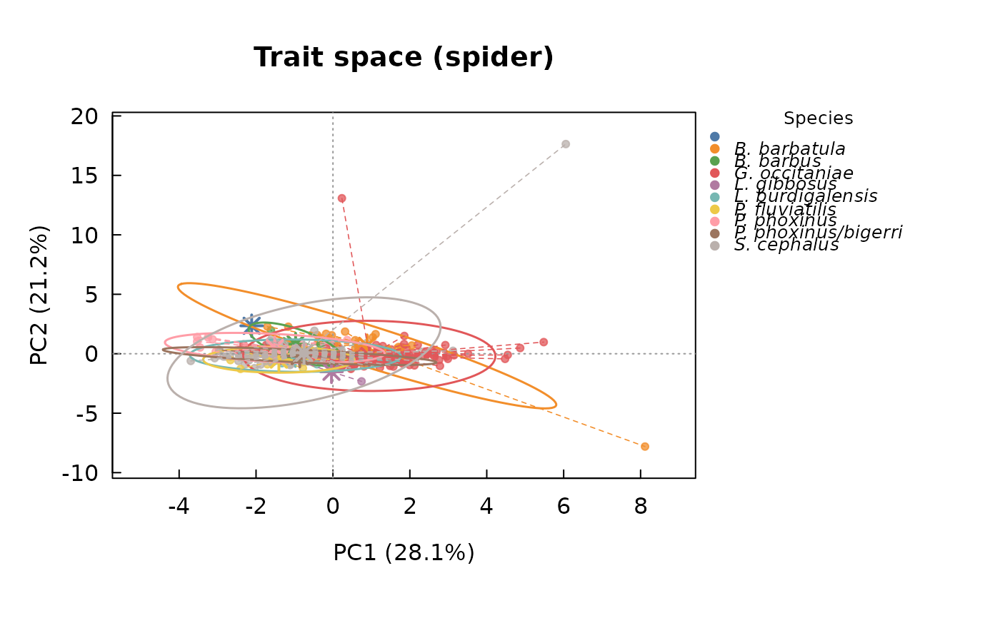

Plot a functional trait space
Arguments
- x
An object of class
"intrait_traitspace", fromtrait_space().- style
Character, one of
"spider"(default),"hull","density", or"none", controlling how groups are displayed; see the Details section ofplot.intrait_morphospace(). Ignored ifx$groupsisNULL. Also named in the plot's title (e.g."Trait space (spider)"), so the display style used is always legible from the figure itself, not just from the call that produced it; passmain =via...to override with a custom title instead.- ellipse_level
Coverage probability of the per-group dispersion ellipse drawn when
style = "spider", under a bivariate-normal approximation. Defaults to0.95.- density_level
Coverage probability of the per-group kernel-density contour drawn when
style = "density"(see Details ofplot.intrait_morphospace()); groups with fewer than 5 points are silently skipped. Defaults to0.95.- legend
Logical, draw a legend of group colors. Defaults to
TRUEwhenx$groupsis available.- legend_position
One of
"outside"(default: drawn in the margin, just outside the plot box, so it never overlaps the data) or a standardgraphics::legend()position keyword (e.g."topright") to draw it inside the plot box instead.- legend_title
Character, the legend's title. Defaults to
"Group"; set to"Species"whenx$groupsrepresents species identity (as it does, e.g., throughoutdemo(pipeline_T26_saudrune)).- legend_italic
Logical, italicise the legend labels (standard typographic convention for taxonomic names). Defaults to
FALSE.- abbreviate_species
Logical, abbreviate
"Genus species"legend labels to"G. species"(e.g."Barbatula barbatula"becomes"B. barbatula"); labels that are not a clean two-part binomial are left unchanged. Only affects the legend text. Defaults toFALSE.- ...
Further arguments passed to
graphics::plot().
Examples
# \donttest{
fish <- load_t26_saudrune_landmarks()
segments <- fishmorph_segments(fish)
#> Warning: 3 specimen(s) have a zero-length or missing scale bar (points 20-21); their segments will be NA.
ratios <- fishmorph_ratios(segments)
ts <- trait_space(ratios, groups = fish$metadata$species, na_action = "omit")
#> Warning: Dropping non-numeric column(s) from the ordination: specimen, individual, species, population, operator
#> na_action = "omit": removing 230 row(s) out of 558 with missing values.
#> flag_outliers: 21 specimen(s) flagged as within-group outlier(s) across 5 group(s) (Barbatula barbatula, Gobio occitaniae, Leuciscus burdigalensis, Phoxinus phoxinus/bigerri, Squalius cephalus); this only flags candidates for review (e.g. with plot_landmarks()/plot_fishmorph_points()), nothing was removed automatically. Set remove_outliers = TRUE to exclude them from the ordination, or see $outlier_screen for details.
#> flag_outliers: 2 group(s) have fewer than outlier_min_n = 5 specimens and were not screened (distance still reported, flagged = NA).
# species-flavoured legend: titled "Species", italic, abbreviated binomials
plot(ts, legend_title = "Species", legend_italic = TRUE, abbreviate_species = TRUE)

# }